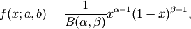
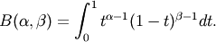

numpy.random.mtrand.RandomState.beta¶
- RandomState.beta(a, b, size=None)¶
The Beta distribution over [0, 1].
The Beta distribution is a special case of the Dirichlet distribution, and is related to the Gamma distribution. It has the probability distribution function

where the normalisation, B, is the beta function,

It is often seen in Bayesian inference and order statistics.
Parameters : a : float
Alpha, non-negative.
b : float
Beta, non-negative.
size : tuple of ints, optional
The number of samples to draw. The ouput is packed according to the size given.
Returns : out : ndarray
Array of the given shape, containing values drawn from a Beta distribution.

Previous topic
numpy.random.mtrand.RandomState
Next topic
numpy.random.mtrand.RandomState.binomial